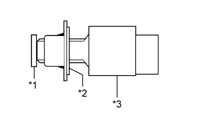
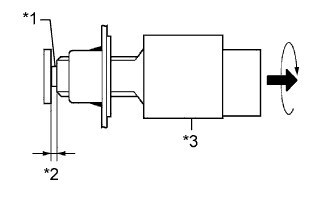

STOP LIGHT SWITCH > INSTALLATION |
| 1. INSTALL STOP LIGHT SWITCH MOUNTING ADJUSTER |
Install the stop light switch mounting adjuster to the pedal support.
| 2. INSTALL STOP LIGHT SWITCH ASSEMBLY |
|  |
Install the stop light switch to the adjuster until the switch body slightly touches the brake pedal.
| *1 | Brake Pedal |
| *2 | Adjuster |
| *3 | Stop Light Switch |
|  |
Rotate the stop light switch counterclockwise so that the clearance is between 1.5 and 2.5 mm (0.0590 to 0.0984 in.) as shown in the illustration.
| *1 | Shaft |
| *2 | 1.5 to 2.5 mm (0.0590 to 0.0984 in.) |
| *3 | Stop Light Switch |
Check the stop light switch clearance.
Connect the connector to the stop light switch.
| 3. INSTALL NO. 1 INSTRUMENT PANEL UNDER COVER SUB-ASSEMBLY |
Connect the connector and attach the clamp.
Attach the 2 clips and 2 guides to install the No. 1 instrument panel under cover.
Install the screw.